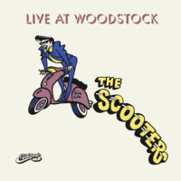

the Scooters - Live At Woodstock (Album, 1994)
01 - Blue Suede Shoes (2:35)
02 - Scootergirl (3:35)
03 - All Shook Up (2:16)
04 - Great Balls Of Fire (2:04)
05 - Schoolday (3:51)
06 - Yakety Yak (2:27)
07 - Cry Cry (3:45)
08 - High School Confidental (3:06)
09 - Need My Love (3:08)
10 - Bouna Sera (3:08)
11 - Summertime Blues (2:45)
12 - Can't Get It Up (2:54)
13 - Splish Splash (2:47)
14 - Honey Don't (2:24)
15 - Birthday Ball (2:35)
16 - The Wanderer (3:25)
17 - Keep On Knockin' (3:03)
© Eldorado :: [ECD 4594]
Notes
Denmark.
Recorded at Woodstock (Copenhagen venue in Vestergade)
My experience is based on Digital release of this Live album (published: 2020 Ny Eldorado)
reference information: Discogs®
Review
094/366 (Project 366)
Live performances are always interesting because of their entertaining value and the opportunity to convey something to the audience. Missing them a bit these days - I decided to review some live albums. The first one is about lively Rock'n'Roll Rockabilly band from Denmark. Some musicians of the Scooters were founders of bonkers-project group Cartoons!
So, "the Scooters - Live At Woodstock" dates from 1994. Seventeen compositions, including both songs of his own and well-known hits.